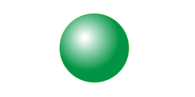

The Boundary of A Boundary is Null
I was about to put the word 'Calculus' in the title of this article but I realized it may scare off potential readers, so maybe I've duped you into opening the link with this cryptic headline. My apologies. Now that you're here, you may as well read on! In this post I'd like to divulge a recurrent (and oddly underappreciated) theme in the grand scheme that is Calculus and, in fact, the universe as a whole. Wait, don't tune out! This is a very visual concept - and quite intriguing at that, although I'm well aware you may all have difficulty taking my word at this point, but trust me. Moving on.
Take a line segment, that is a line that with endpoints (the segment may be curved). What is the boundary of a line segment? Think about it for a moment (hint: I already mentioned it).

It's the endpoints! The boundary of a line segment is it's endpoints. What are the boundaries of the endpoints then? This is a little tougher.
Well points, by their very definition, are zero-dimensional entities, so they have no boundaries. The boundary of a point is null. Hence, the points are the boundary of a line segment, but the boundary of the boundary - the boundary of the points, is null.
A 1-dimensional entity has a 0-dimensional boundary.
Lets move higher up in dimension. Take a circular disc. What is it's boundary?

If you said the boundary is the circular edge of the surface, you are correct. Now, what is the boundary of this circle (just the circle, NOT the disc).
Well, it has no boundary. It loops back onto itself, there are no endpoints, no boundary. Once again, the boundary of a boundary is null.
A 2-dimensional entity (the disc) has a 1-dimensional boundary (the circle*).
*A circle is 1-dimensional because it's actually just a line that loops on itself - more explicitly it can be defined by (a) function(s) of one variable, whereas a 2-dimensional structure would require 2 variables and so-on and so-forth.
Lets go higher still in dimensions. Take a solid ball. The boundary in this case is the spherical surface that encloses the insides of the solid ball.

A 3-dimensional entity (the ball) has a 2-dimensional boundary (the spherical surface).
What's the boundary to this spherical surface? Well it's null. See the pattern? The spherical surface has no hole, it has no boundary - like the circle was to the circular disc - the sphere 'loops' back onto itself so it has no boundary. Again, the boundary of a boundary is null.

It makes intuitive sense, but it's definitely a curious oddity. We can move up higher and higher in dimensions and this proposition will still hold true. However, as beings who can only really understand up to the third dimension, visualizing this relationship in dimensions higher than the three is no longer possible so I will stop here with the visuals.
In an effort to keep this post shorter, I will briefly overview the heart of the concept. You may be wondering what any of this has to do with Calculus. Far more than you could even imagine to be honest. Unfortunately, if you've never had any exposure to Vector Calculus, the following terminology and notation may be quite foreign*.
*With some Googling, and a strong intrinsic sense of curiosity, I truly believe these formulas and notations are really not as intimidating as they may first seem
Recall the Vector Calculus identities:
The Curl of the Gradient of a scalar function is null

The Divergence of the Curl of a vector field is null

The concept that the 'boundary of a boundary is null' is precisely encapsulated in these identities. In fact, it's the other way around, the fact that the boundary of a boundary is null implies that these identities must be true.
The Divergence of a Curl equals zero is usually interpreted with the understanding that something that only swirls (curling) has no radial motion (no diverging component).

The Curl of a Gradient equals zero is similarly understood with the description that something that only moves radially outward/inward (diverges) has no swirling motion (no curling component).


This is precisely because you take the Curl on a bounded surface (2-D) - and you take the Divergence on a bounded space (3-D). These operations can only be performed with respect to a boundary. So if you take the equivalent next derivative (if you took the Curl, you'd take the Divergence next - if you took the Gradient, you'd take the Curl next) then you will get zero - the boundary of a boundary is null.
If you think about it, the Fundamental Theorem of Calculus, which states that Integration and Differentiation are inverse processes, is ultimately describing a relationship that exists on a property of an entity between adjacent dimensions. (consider the derivative of x2 is some constant times x1 - the integral of x1 is some constant times x2)
Furthermore, what the Fundamental Theorem of Vector Calculus, the higher dimensional analogue, actually means is that any smooth twice-differentiable vector field can be decomposed into a swirling component (divergence-free) and a radial component (curl-free) - also known as the Helmholtz Decomposition.

As per usual, I'm well aware that everything I've talked about up to this point seems extremely abstract and completely useless - but, as likewise per usual, this concept is an intrinsic characterization of how the universe works and is equivalent to the law of the conservation of energy. In fact, any quantity that is conserved (momentum, energy, spin, curvature, charge, etc.), can be equivalently formulated in some way as an expression of 'the boundary of a boundary is null' (usually in phase space) and vice versa.
Anyway, this post is running way longer than I expected again. I hope I've shed light on another face of Calculus for you all today - and for those who've never had exposure to Calculus, hopefully there was some takeaway from this geometric curiosity. I've posted some additional links below if you're interested. As always, stay passionate, stay strong, stay curious, and take care of yourselves.
Helmholtz Decomposition a.k.a. The Fundamental Theorem of Vector Calculus
Generalization of Div & Curl to Differential Geometry
The Exterior Derivative
Hodge Decomposition
Credit to Wikipedia, Kasadkad, Wolfram Math World, and Math Insight for their images